Atlas de la pérdida forestal · ParaguayHansen GFC 2025 · v1.13
El Chaco perdió un tercio de su bosque en 25 años
Los tres departamentos del Chaco —Boquerón, Alto Paraguay y
Presidente Hayes— perdieron el 35,7 % del bosque que tenían
en el año 2000. Los dos primeros concentran la mayor parte:
Boquerón 3,25 millones de hectáreas (45,9 %) y Alto Paraguay
2,17 millones (31,5 %). Juntos suman 5,41 millones de
hectáreas, el 65,3 % del desmonte de todo el país.
Autor
Guillermo Cabrera · Periodismo de datos
Fuente
Hansen Global Forest Change 2025 v1.13
Periodo
2001–2025 · Boquerón y Alto Paraguay
Placa 01 · evidenciaAÑO 2025 · acumulado
El Chaco ocupa más de la mitad del territorio paraguayo y
guarda el bosque seco continuo más extenso de Sudamérica.
La serie de Hansen Global Forest Change registra, píxel a
píxel, cuánta cobertura arbórea había en el año 2000 y cuánta
se perdió en cada uno de los 25 años siguientes. Este atlas la
aplica a Boquerón y Alto Paraguay,
los dos departamentos que concentran casi dos tercios del
desmonte del país.
Antes de leer los mapas conviene mirar el punto de partida.
Para contar un píxel como bosque, la serie exige al menos
30 % de cobertura de copa en el año 2000, y solo mide lo que
se perdió a partir de ahí: la vegetación natural que nunca
alcanzó ese umbral, y todo lo que ya se había desmontado antes
de 2001, quedan fuera de la cuenta. En el primer fotograma,
casi la mitad del encuadre está en esa zona ciega.
La secuencia tiene 26 cortes anuales y se lee en orden. Vista
así, la pérdida deja de ser una cifra y se vuelve una
geometría: cuadros rectangulares que se multiplican en el
borde de los desmontes anteriores, franjas de vegetación que
quedan en pie entre potrero y potrero, y una malla de caminos
que crece junto con ellos.
El primer bloque compara tres cortes sobre el mismo encuadre
y a la misma escala: 2002,
2010 y 2025.
La serie temporal: tres lecturas del mismo territorio
Punto 01 de 03 · 2002
2002: la línea de base ya no era virgen
En el corte del año 2002 la
pérdida acumulada no llega al 1 % del encuadre. Lo que
domina la imagen no es bosque intacto, sino una malla de
bloques oscuros —sin dosel cerrado— que ya existía en el
año 2000: sabanas y humedales, pero también cuadros de
bordes rectos y caminos, rastro de desmontes anteriores
al arranque de la serie.
Los puntos rojos son la pérdida detectada en 2001 y
2002: escasos frente a lo que viene, y repartidos sobre
todo por el centro y el este del encuadre.
Año 2002 · Alto Paraguay + Boquerón
Punto 02 de 03 · 2010
2010: los bloques se conectan
Ocho años después, la pérdida acumulada deja de ser una
serie de puntos: cada cuadro nuevo aparece pegado al
borde de uno anterior, y el resultado es una franja
continua que cruza el centro del mapa.
La forma también es un dato. Los desmontes son
rectángulos, no manchas: es la geometría de la ganadería
mecanizada, que trabaja por potreros y conserva franjas
de vegetación entre ellos.
Año 2010 · Alto Paraguay + Boquerón
Punto 03 de 03 · 2025
2025: 25 años acumulados en un solo encuadre
En el año 2025 el bosque que
estos dos departamentos tenían en el año 2000 había
perdido el 38,8 % de su superficie. En la imagen, la
marca de pérdida ocupa cerca de una quinta parte del
encuadre, contra menos del 1 % en 2002.
Dos rasgos no estaban en 2010: el frente se ensancha
desde los bordes de cada cuadro, y en el norte de Alto
Paraguay aparece un núcleo tardío que los cortes
anteriores no registraban. Los cauces y los humedales
siguen enteros: la pérdida los rodea, no los cruza.
Año 2025 · Alto Paraguay + Boquerón
Año 2002 · Alto Paraguay + Boquerón
2002 · 2010 · 2025
Dónde se pierde más, en proporción
La serie temporal ordena la pérdida en el tiempo. El explorador
la ordena en el espacio: 17 departamentos y Asunción, cada uno
coloreado según qué porcentaje de su bosque del año 2000 perdió
desde 2001.
Leído así, el ranking no sigue el sentido común. El Chaco pierde
más hectáreas porque tenía mucho más bosque, pero en proporción
la Región Oriental compite de igual a igual: detrás de
Boquerón (45,9 %) aparecen
San Pedro (43,1 %) y
Canindeyú (43,1 %), departamentos pequeños que
perdieron cerca de la mitad de superficies mucho menores.
Alto Paraguay, con 6,86 millones de hectáreas
de bosque en el año 2000 —casi tanto como Boquerón—, queda
sexto con 31,5 %.
La distinción importa para leer el mapa: un departamento puede
encabezar la pérdida absoluta sin acercarse al tope relativo, y
al revés. El panel del explorador muestra las dos cifras a la
vez —hectáreas y porcentaje— para no confundir magnitud con
intensidad.
Placa 02 · Dos territoriosBoquerón / Alto Paraguay · recorte por departamento de la misma capa
Boquerón y Alto Paraguay, lado a lado
Los dos departamentos arrancan de una base comparable: 7,07
millones de hectáreas de bosque en el año 2000 en Boquerón y
6,86 millones en Alto Paraguay. Terminan en lugares distintos:
3,25 millones de hectáreas perdidas en el primero (45,9 %) y
2,17 millones en el segundo (31,5 %), catorce puntos
porcentuales de diferencia.
El ritmo tampoco coincide. Boquerón toca su techo en 2012
—243.141 hectáreas en doce meses— y Alto Paraguay en 2010
(156.092 hectáreas). La serie de Alto Paraguay guarda además un
salto tardío: 176.042 hectáreas en 2019, casi el triple que en
2018. Ese pico también aparece en la serie publicada por Global
Forest Watch, un 19 % más abajo.
Boquerón
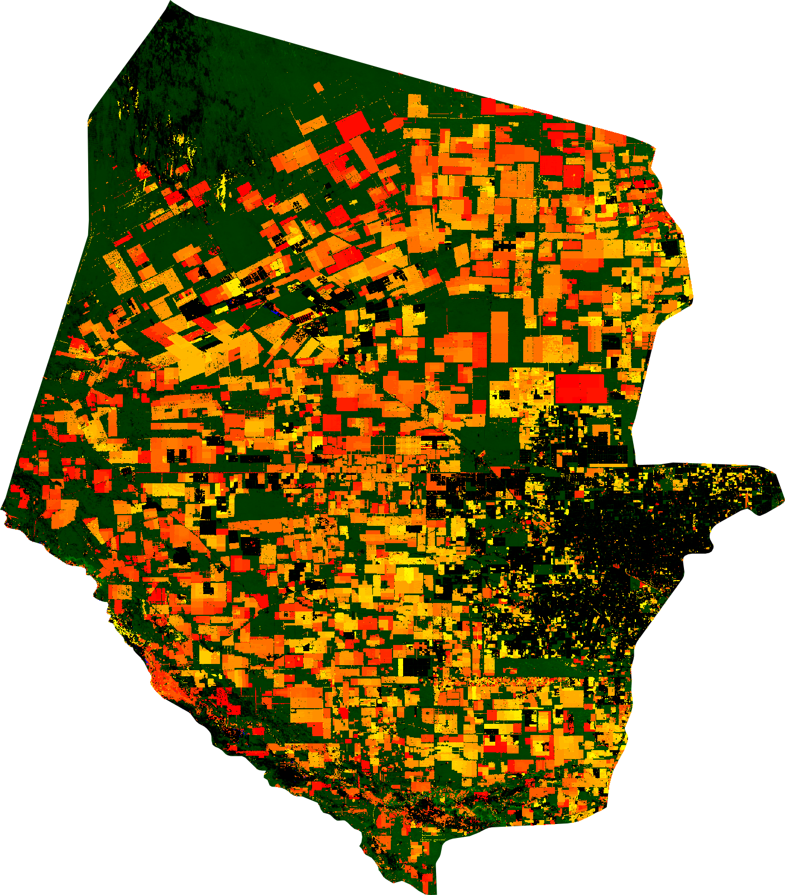
Pérdida acumulada: 3.245.165 ha · 45,9 % de su bosque del
año 2000 · peor año 2012 (243.141 ha)
Alto Paraguay
Pérdida acumulada: 2.165.089 ha · 31,5 % de su bosque del
año 2000 · peor año 2010 (156.092 ha)
Placa 03 · Pérdida y emisionesSeries anuales · 2001–2025
La serie de Global Forest Watch para Boquerón suma 2,93 millones de hectáreas en 25 años —el 41,5 % de su bosque del año 2000— y 525 Mt de CO₂e brutas. Su máximo es 2012, con 227.485 hectáreas en doce meses. El agregado propio del proyecto, que es el que colorea el mapa, es más alto: 3,25 millones de hectáreas (45,9 %).
Dentro de la extensión de bosque primario húmedo que tenía en 2001, Boquerón perdió 7.527 hectáreas en 25 años: el 0,26 % de toda su pérdida de cobertura arbórea, frente a 2,93 millones de hectáreas en el mismo periodo. Los picos son tardíos —2016 y 2018—, no los años de mayor desmonte.
Pérdida dentro de la extensión de bosque primario de 2001 · años rotulados: ’01 · ’06 · ’11 · ’16 · ’21 · ’25
Misma advertencia metodológica que arriba: el método cambió en 2015. Más información aquí.
Bosque primario de 2001 · dosel arbóreo >30 % · sin descontar ganancia
La serie de Global Forest Watch para Alto Paraguay suma 1,93 millones de hectáreas —el 28,2 % de su bosque del año 2000— y 487 Mt de CO₂e brutas. Su año más alto es 2010, con 156.092 hectáreas. El agregado propio del proyecto es 2,17 millones (31,5 %).
Alto Paraguay concentra 347.276 hectáreas de pérdida de bosque primario húmedo —el 18,0 % de toda su pérdida de cobertura arbórea—, repartidas entre 2002 y 2016, con máximos en 2012 (35.139 ha) y 2003 (32.680 ha). Es el 98 % del bosque primario perdido en los dos departamentos: Boquerón aporta 7.527 hectáreas.
Pérdida dentro de la extensión de bosque primario de 2001 · años rotulados: ’01 · ’06 · ’11 · ’16 · ’21 · ’25
Misma advertencia metodológica que arriba: el método cambió en 2015. Más información aquí.
Bosque primario de 2001 · dosel arbóreo >30 % · sin descontar ganancia
Dos denominadores, un mismo territorio. Los
cuatro gráficos de esta placa reproducen la serie publicada por
Global Forest Watch. El mapa, el ranking, la leyenda y el archivo
descargable usan el cálculo propio del proyecto, que aplica un
criterio de agregación más amplio y rinde entre 9 % y 11 % más en
estos dos departamentos. Cada cifra es válida dentro de su
método; lo que no corresponde es sumarlas entre sí. Por eso todo
número de este sitio se cita con su fuente.
Placa 04 · Explorador territorial17 departamentos + Asunción · selección por clic o teclado
Paraguay, departamento por departamento
El mapa colorea cada unidad según el porcentaje de su bosque del
año 2000 que perdió desde 2001. La lista y el selector de capa
abren su imagen completa, con la cobertura inicial y la pérdida
acumulada en hectáreas y en porcentaje.
Las cifras de este sitio no se consultan en vivo: se
calcularon una vez en Google Earth Engine y quedaron en
archivos locales. Los mapas son exportaciones PNG del mismo
proceso; los gráficos leen cuatro CSV publicados por Global
Forest Watch.
La fuente primaria es Hansen Global Forest Change 2025
v1.13, la serie de referencia mundial para pérdida de
cobertura arbórea. El proyecto la procesa con su propio
pipeline (hansen_export_pipeline.py) y Global Forest Watch
publica su propia agregación de la misma serie. Las dos
cifras no coinciden, y el sitio las presenta por separado
(Placa 03).
Tres advertencias sobre el alcance. Primero: estos mapas
detectan cambios en la cobertura arbórea, no propiedad,
rindes ni uso del suelo, y no distinguen un desmonte de un
incendio o de una muerte de dosel por sequía. Segundo: solo
cuentan los píxeles que tenían al menos 30 % de copa en el
año 2000, así que la vegetación natural por debajo de ese
umbral y todo lo desmontado antes de 2001 quedan fuera de la
serie. Tercero: el cálculo propio del proyecto y la serie
publicada por Global Forest Watch difieren en torno al 10 %
en estos departamentos; la diferencia es de método y está
señalada donde corresponde.
El proyecto crece por agregación: cada año o departamento
nuevo entra sumando sus imágenes y sus filas de datos, sin
volver a procesar lo anterior.
Placa 06 · Un informe complementarioPlanet AI · publicado 2026-09-05 · Hansen v1.11 · Landsat 8/9 · CHIRPS · PlanetScope
Un informe complementario, con sus propios límites
El recorrido cierra con un documento de otra naturaleza: un
informe generado por la herramienta de análisis con inteligencia
artificial de Planet Labs, publicado el 5 de septiembre de 2026,
sobre pérdida, degradación y fragmentación del Gran Chaco entre
2016 y 2026 en un área de 171.263 km² delimitada por un polígono
de 29 vértices. Sus cifras salen de fuentes verificables
—Hansen, Landsat, CHIRPS—, pero el documento es un análisis
automático: no es un trabajo arbitrado ni una investigación
periodística. Se reproduce como fuente secundaria y con los
límites que él mismo declara.
El propio informe acota el alcance con un dato geométrico:
aunque se presenta como transfronterizo, el
98,1 % del área analizada está en Paraguay
(168.060 km²). Bolivia, Brasil y Argentina aportan franjas de
borde que pesan entre 0,3 % y 1,1 % del total. En la práctica,
el documento es una radiografía de Boquerón, Presidente Hayes
y Alto Paraguay.
El informe cruza Hansen Global Forest Change
v1.11 (pérdida anual 2001–2023) con
compuestos Landsat 8/9 de estación seca (índices NDVI, NBR y
BSI), lluvia CHIRPS de 12 meses y verificaciones puntuales con
imágenes PlanetScope de 3 metros. Cada figura que sigue es una
figura original del informe, reproducida como
anexo documental.
Conviene separar dos capas del documento. Los números
—hectáreas, porcentajes, años— provienen de las fuentes
citadas y son contrastables contra ellas. Las lecturas —qué
significa un par de imágenes, cuánto pesa la sequía frente al
desmonte, qué conclusión deja una celda aislada— son del
sistema que redactó el informe. En cada figura se indica cuál
de las dos cosas se está leyendo.
Área de interés (AOI)
171.263 km² · 98,1 % PY
Bosque del 2000 perdido al 2023
32,7 % · 46.282 km²
Ritmo medio 2017–2023 (subárea PY)
≈ 1.780 km² / año
Nota de fidelidad. Las cifras propias de este
sitio salen de Hansen GFC v1.13 (serie 2001–2025,
exportada por hansen_export_pipeline.py). El informe
adjunto usa Hansen v1.11, cuya contabilidad de
pérdida llega hasta 2023; sus lecturas de 2024 a 2026 se apoyan
en Landsat y PlanetScope, no en un conteo de hectáreas. Son tres
agregaciones de la misma familia de datos —proyecto, Global
Forest Watch e informe—, con ventanas temporales y criterios
distintos, y ninguna reemplaza a las otras.
Placa 07 · La pérdida no se detuvoSerie Hansen acumulada · 2016–2023
Ocho años, ninguna reversión
Entre 2016 y 2023 —el último tramo con conteo de hectáreas del
informe— el área perdió 12.484 km² y
ningún año revirtió la tendencia. La tasa anual
se movió entre 1.300 y 2.600 km², sin una caída sostenida.
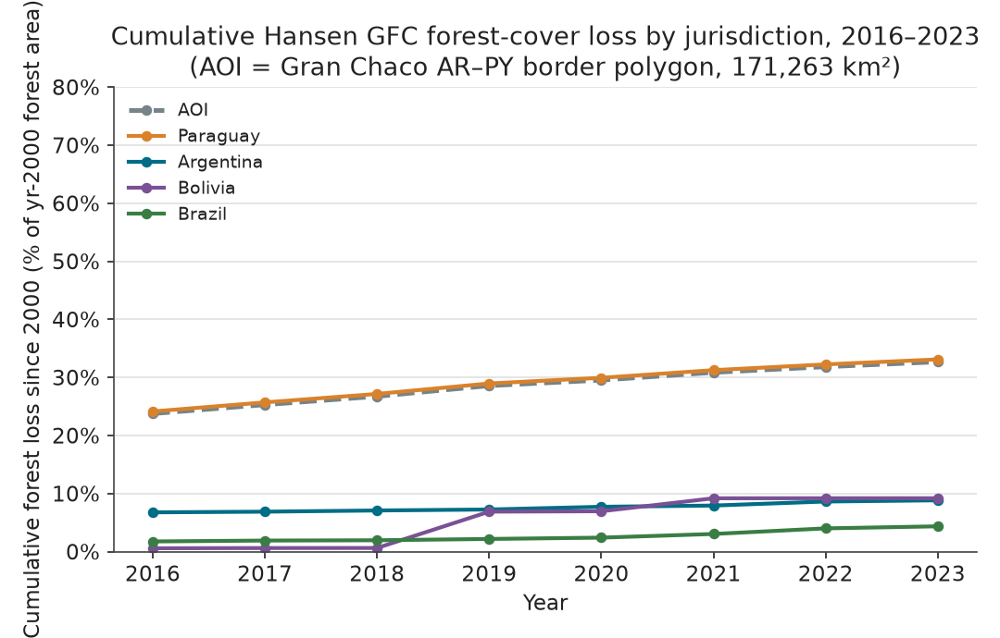
Figura 1 · informe Planet
Pérdida acumulada (% del bosque del año 2000) por
jurisdicción, 2016–2023. El salto de Bolivia entre 2018 y
2019 coincide con la temporada de incendios de la
Chiquitania, corroborada visualmente por el informe.
Figura 2 · informe Planet
Incremento anual de pérdida (km²/año), AOI vs. subárea de
Paraguay. Promedio 2017–2023: ≈ 1.780 km²/año
(12.484 km² en siete años).
Figura 3 · informe Planet
Paraguay 33,1 % · Bolivia 9,2 % · Argentina 8,8 % ·
Brasil 4,3 %. Advertencia del informe: las franjas
argentino, boliviano y brasileño miden 0,3–1,1 % del AOI;
es una muestra puntual, no una comparación nacional.
Lectura. El informe no cierra la serie:
propone usar las celdas de bosque conservado que bordean el
corredor de focos (Placa 08) como indicador temprano, en lugar
de medir solo lo que ya se desmontó.
Placa 08 · Dónde golpea la fronteraCeldas de 0,25° · ≈ 27 × 27 km · 263 celdas relevadas
Un corredor de focos, no un desmonte disperso
El análisis por celdas de 0,25° (≈ 27 × 27 km) muestra que la
pérdida no se reparte: se aprieta en una faja continua sobre el
centro de Boquerón y Presidente
Hayes, con celdas que perdieron entre el 60 % y el 71 %
de su bosque del año 2000. Alrededor del Parque Nacional
Defensores del Chaco y de la reserva Médanos del Chaco la
pérdida no llega al 3 %: lo que queda en pie coincide con
protección formal, no con lejanía. Los puntos
del mapa replican los sitios que el informe verificó uno por uno.
Foco verificado (60–71 % perdido) Control protegido (Defensores del Chaco) Verificación transfronteriza Celda con discrepancia
Pasá el cursor o recorré los puntos con Tab para ver sus datos.
Las cinco celdas más afectadas al 2023 (todas > 400 km² de
bosque 2000, todas en Paraguay)
Centro de celda
Bosque año 2000
Pérdida al 2023
% perdido
21,025° S · 60,175° O
708 km²
506 km²
71,5 %
20,775° S · 60,675° O
714 km²
500 km²
70,0 %
21,275° S · 59,675° O
627 km²
407 km²
64,9 %
22,525° S · 60,925° O
657 km²
420 km²
63,9 %
21,775° S · 60,425° O
602 km²
385 km²
63,9 %
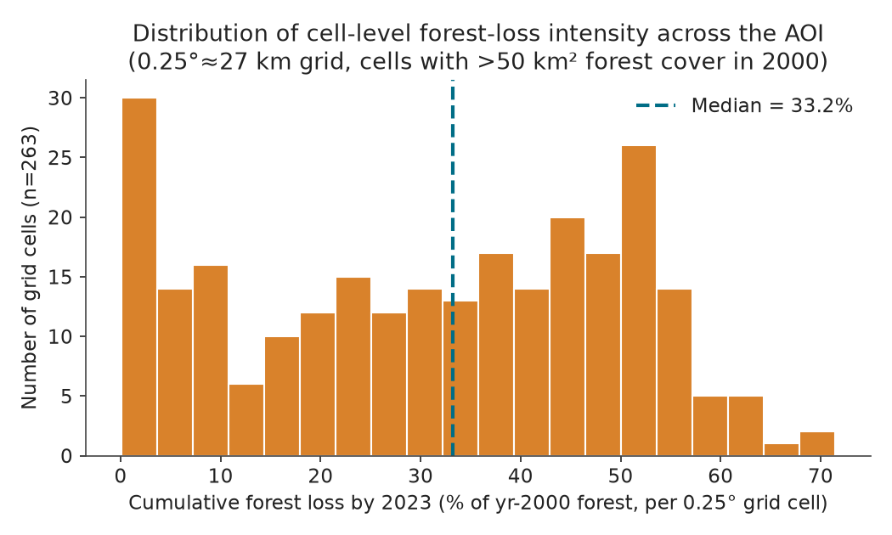
Figura 6 · informe Planet
Intensidad de pérdida por celda (n = 263). Mediana 33,2 %,
media 30,9 %: los extremos mueven el promedio, por eso
la mediana describe mejor la celda típica.
Figura 9 · informe Planet
En siete años, la porción del bosque original en celdas
fuertemente fragmentadas pasó del 20,2 % al 41,9 %, y la
de celdas intactas cayó del 29,0 % al 17,7 %.
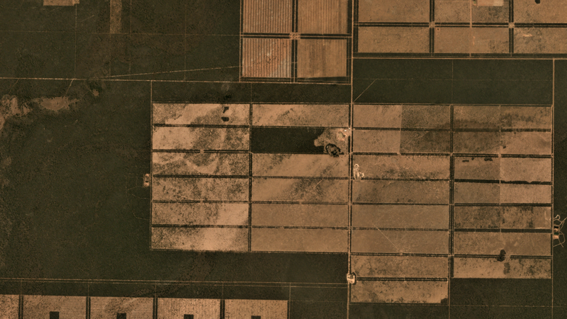
Foco A · 21,025° S 60,175° O — ago 2017
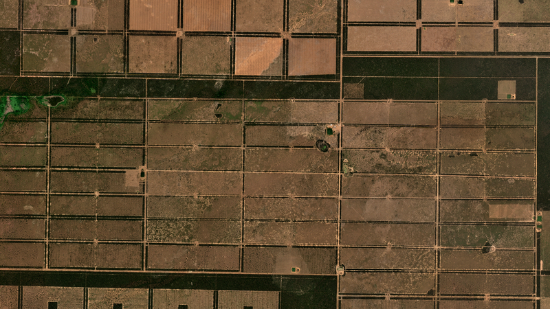
Foco A · mismo sitio — ago 2026
Foco B · 20,775° S 60,675° O — ago 2017
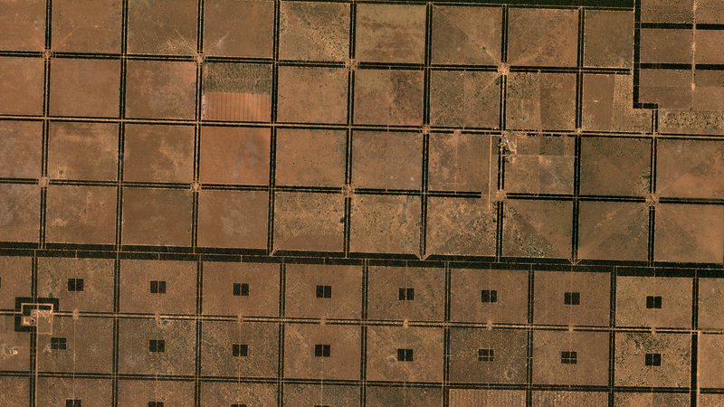
Foco B · mismo sitio — ago 2024
La firma del desmonte chaqueño: los pares de
imágenes muestran el damero de la ganadería mecanizada —
piquetes rectangulares entre cortinas forestales
obligatorias (Ley 422/73), islas de sombra dentro de los
piquetes, coronas de sobrepastoreo junto a los tajamares y
una malla densa de caminos vecinales. Las superficies
estimadas a ojo son cualitativas —interpretación de un cuadro
de 11 × 6 km—; los números duros vienen solo del conteo de
píxeles de Hansen.
Placa 09 · Estrés, clima y regeneraciónLandsat estación seca (jul–ago) · CHIRPS · muestra n = 212 px
El verde que engaña: sequía, no recuperación
Los índices de vegetación se leen junto con el pluviómetro: las
caídas de NDVI/NBR y los picos de suelo expuesto (BSI) de 2020,
2022 y 2024 coinciden con años secos del CHIRPS, no con picos de
desmonte. El caso más claro es 2022: es el peor año espectral de
la serie y, a la vez, uno de los incrementos de pérdida
más chicos del registro Hansen (1.386 km² en el área de
interés). Un valle de verdor, acá, avisa sequía.
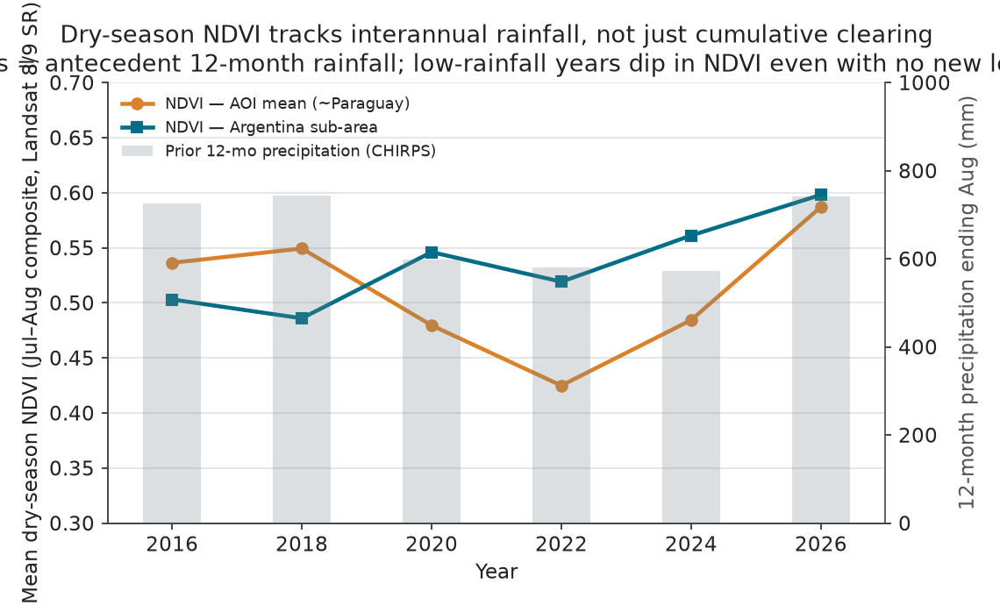
Figura 4 · informe Planet
NDVI medio de estación seca vs. lluvia antecedente de
12 meses (CHIRPS). La correspondencia entre valles de
lluvia y valles de NDVI es la evidencia central para no
leer caídas verdes como deforestación nueva.
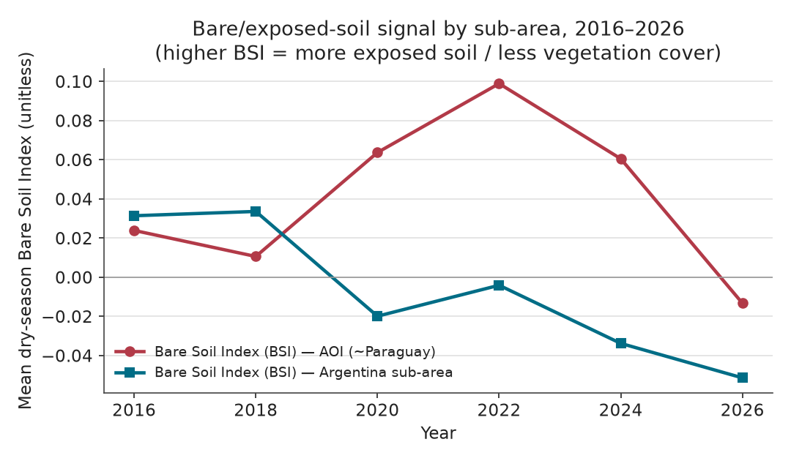
Figura 5 · informe Planet
BSI (suelo expuesto) AOI vs. Argentina. La red de
cortinas forestales retiene oscuridad incluso en celdas
70 % desmontadas: el índice nunca llega a valores de
desierto pelado.
Figura 7 · informe Planet
NDVI 2024: bosque estable vs. píxeles con pérdida Hansen
(muestra aleatoria, n = 212). Lo marcado como pérdida es
efectivamente no-bosque en 2024.
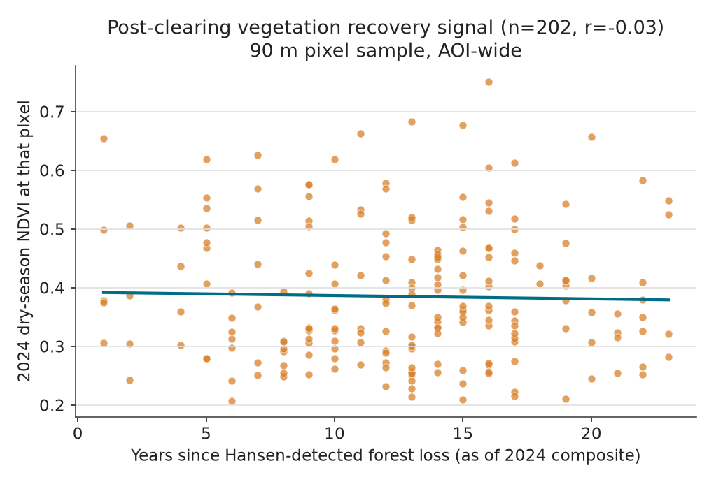
Figura 8 · informe Planet
Años desde el desmonte vs. verdor 2024: r = −0,03,
estadísticamente indistinguible de cero. No hay evidencia
de regeneración del bosque sobre la tierra convertida:
pastura permanente, no agricultura rotativa.
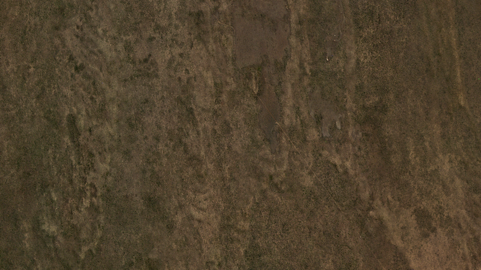
Control · Defensores del Chaco — ago 2017
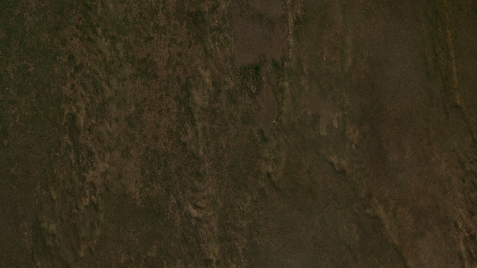
Control · mismo sitio — ago 2024 · pérdida acumulada 0,075 %
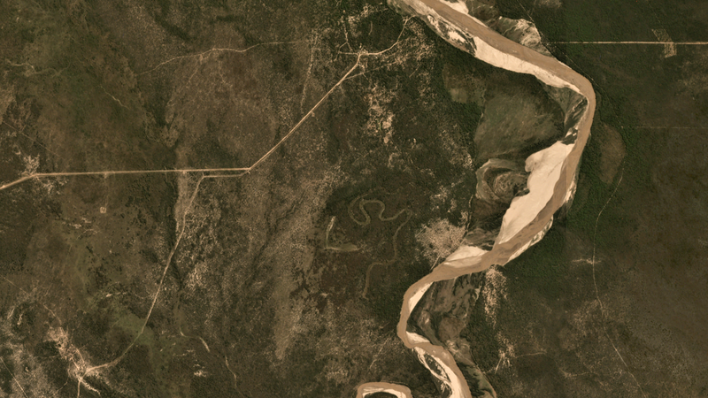
Argentina · llanura del Bermejo — ago 2017
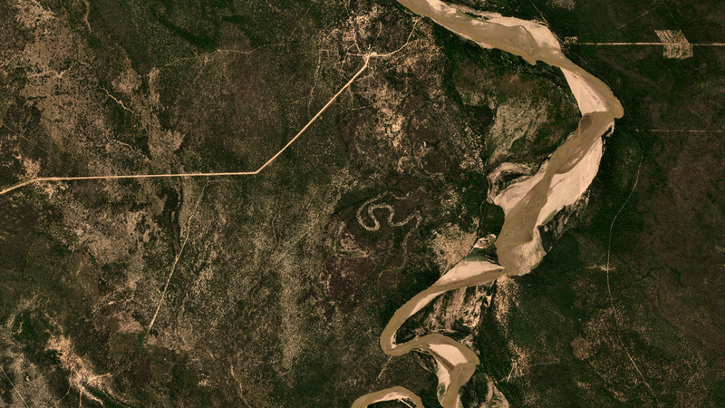
Argentina · mismo sitio — ago 2024
Lo que el informe no resuelve, lo declara. Una
celda del norte de Alto Paraguay (19,525° S · 58,925° O) figura
con ~60 % de pérdida en Hansen, pero tres verificaciones
PlanetScope (2017, 2024 y 2026) muestran cobertura continua. O es
un error de clasificación sobre humedales estacionales tipo
Pantanal, o el desmonte real está en otro rincón no muestreado de
esa celda de 27 × 27 km. La celda queda fuera del relato de focos
y el caso deja algo útil: el porcentaje de una sola celda es un
indicio, no una prueba.
Placa 10 · Gobernanza y lo que queda en juegoSíntesis de literatura citada · §11–§12 del informe
Una ley que protege, una máquina que no alcanza
En la Región Oriental, la Ley 2524/04 de "Deforestación Cero"
prohíbe abrir nuevos cambios de uso. En el Chaco esa
ley no rige. Las fincas de más de 20 hectáreas operan
bajo la Ley 422/73: deben conservar entre 40 % y 45 % de
vegetación nativa —las cortinas que aparecen en cada imagen de
la Placa 08— y pueden desmontar el resto con permiso del
INFONA. Extender la protección al Chaco se intentó en el
Congreso en 2009 y en 2019; las dos veces se perdió.
El sistema de permisos, en los números, es parte del problema:
entre agosto de 2017 y agosto de 2018 se desmontaron 255.000
hectáreas en el Chaco, de las cuales 194.000 tenían
autorización y unas 61.000 (24 %) fueron "posiblemente
ilegales", según datos del INFONA citados por
Earthsight. Ese mismo año el Decreto 7702 llegó a habilitar el
desmonte total de la finca, hasta que la administración
siguiente lo derogó. Los reportes citados describen una agencia
ambiental con "once empleados y dos autos" para millones de
hectáreas. Guyra Paraguay, con IDEA y WWF, cruza mes a mes las
alertas satelitales con el registro de permisos: la
fiscalización que el Estado no cubre.
El atlas no puede dejar afuera una dimensión que no aparece en
los píxeles. Dentro y junto al corredor de focos de la Placa 08
está el territorio restante de los
Ayoreo-Totobiegosode, el único pueblo fuera
del Amazonas con miembros confirmados en aislamiento
voluntario. Su núcleo territorial reportado ronda las 550.000
hectáreas, frente a un rango histórico superior al millón, y
organizaciones de derechos humanos y de conservación documentan
que cinco operaciones agropecuarias avanzan sobre él con
ganadería. El informe reproduce esa documentación con una
salvedad importante: no verifica por sí mismo la titularidad
ni la legalidad de ninguna parcela.
Hallazgos principales del informe
Pérdida continua, sin reversión. En el área de interés, el 32,7 % del bosque del año 2000 estaba perdido al 2023 (46.282 km²). Ningún año de la serie revirtió la tendencia.
Es, en los hechos, un caso paraguayo. El 98,1 % del área analizada está en Paraguay. Las franjas de Bolivia, Brasil y Argentina pesan entre 0,3 % y 1,1 % del total: sirven como control, no como comparación entre países.
La pérdida se concentra. Un cinturón de celdas con 60–71 % de su bosque perdido en el centro de Boquerón y Presidente Hayes, contra menos de 3 % en el núcleo protegido Defensores del Chaco / Médanos del Chaco. La protección formal separa lo que la distancia no separa.
El verdor cae por sequía antes que por desmonte. Los valles de NDVI/NBR/BSI de 2020, 2022 y 2024 siguen la señal de lluvia del CHIRPS. Leerlos como deforestación nueva es un error de interpretación.
El bosque convertido no vuelve. La correlación entre años transcurridos desde el desmonte y verdor de 2024 es r = −0,03, indistinguible de cero: dentro de la ventana analizada, la conversión es permanente.
La fragmentación se duplicó en siete años. La porción del bosque original en celdas fuertemente fragmentadas pasó de 20,2 % a 41,9 %, y la de celdas intactas cayó de 29,0 % a 17,7 %.
El patrón es de fiscalización, no de normas ausentes. Paraguay (permisos del INFONA) y Argentina (Ley 26.331, con reclasificaciones administrativas documentadas) comparten el mismo desenlace: norma protectora, control insuficiente.
Lo que el informe no puede sostener. Es un análisis automático: sus cifras se contrastan contra las fuentes, pero sus lecturas de imágenes y sus conclusiones por celda son interpretación, y su conteo de pérdida termina en 2023.
Limitaciones declaradas por el informe: Hansen solo
cubre hasta 2023 (2024–2026 son lecturas condicionales de
Landsat/PlanetScope); la fragmentación usa un proxy por celdas,
no análisis de conectividad a resolución nativa; las muestras
argentina, boliviana y brasileña son geográficamente acotadas; y
todas las relaciones estadísticas son correlacionales, no
causales.
Referencias del informe
Guyra Paraguay / IUCN NL — Monitoreo satelital de alertas de deforestación en el Chaco · NASA Earth Observatory — iucn.nl / science.nasa.gov
Earthsight — Casi un cuarto de la deforestación del Chaco posiblemente ilegal (INFONA); decreto 7702; Ley 422/73 y 2524/04 · earthsight.org.uk
ScienceDirect — Impacto de los gobiernos nacionales en la pérdida de cobertura forestal del Chaco paraguayo, 1999–2021 · sciencedirect.com
IWGIA — Los Ayoreo, el último pueblo aislado fuera del Amazonas (~800 ha/día; medidas cautelares CIDH 2016) · iwgia.org
Earthsight — El último refugio: defensa de los Ayoreo Totobiegosode (cinco operaciones agropecuarias) · earthsight.org.uk
Mongabay — Los Ayoreo no contactados podrían enfrentar riesgos sanitarios mientras el Gran Chaco se reduce (pérdida > 45.000 km² 2001–2019) · news.mongabay.com
ScienceDirect — "La ley es una telaraña": deforestación ilegal en el Chaco seco argentino tras la Ley de Bosques (722.782 ha 2008–2017) · sciencedirect.com
Mongabay Latam — Cómo se eludió la Ley de Bosques en la provincia de Chaco, Argentina (500.000 ha por reclasificación 2009–2024) · mongabay-latam.lamula.pe